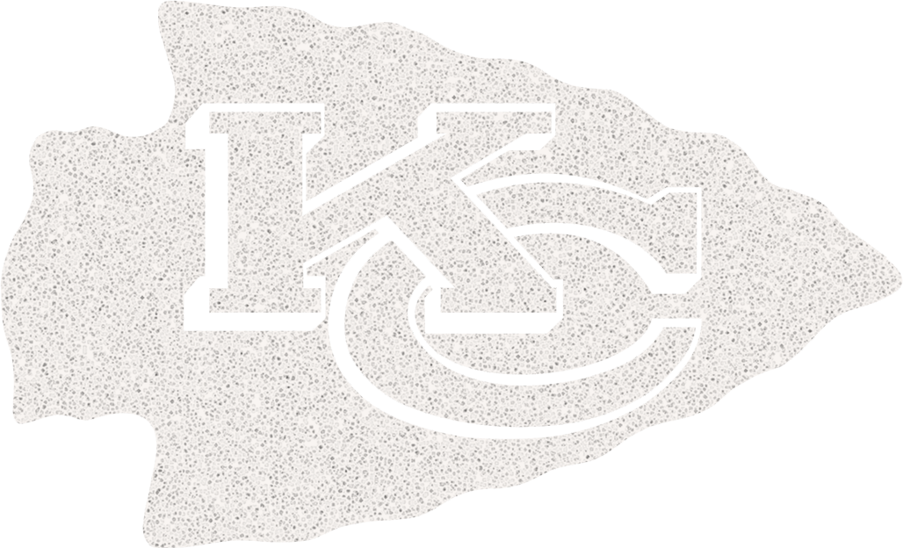
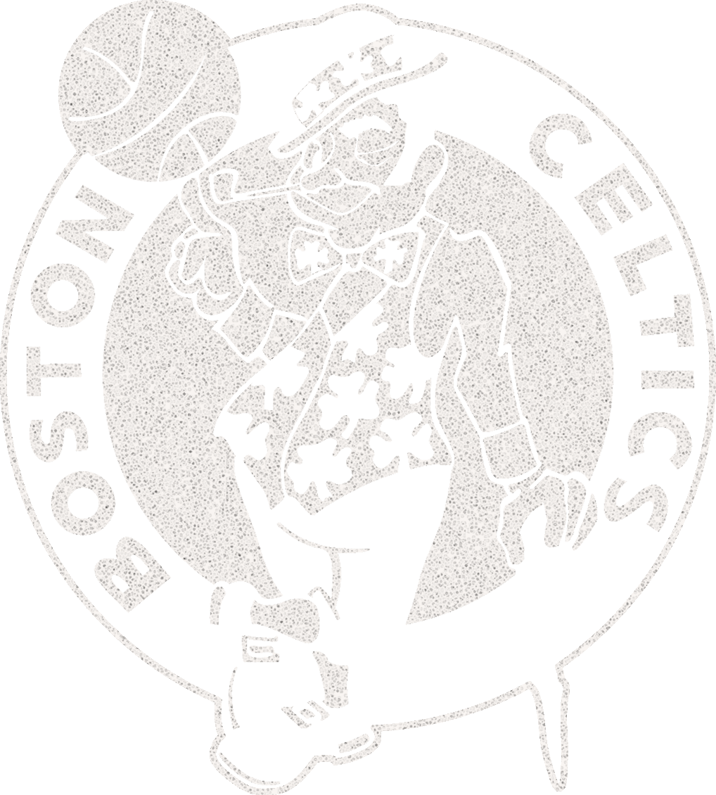
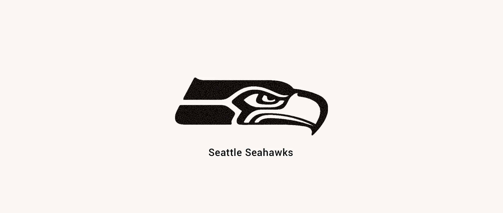
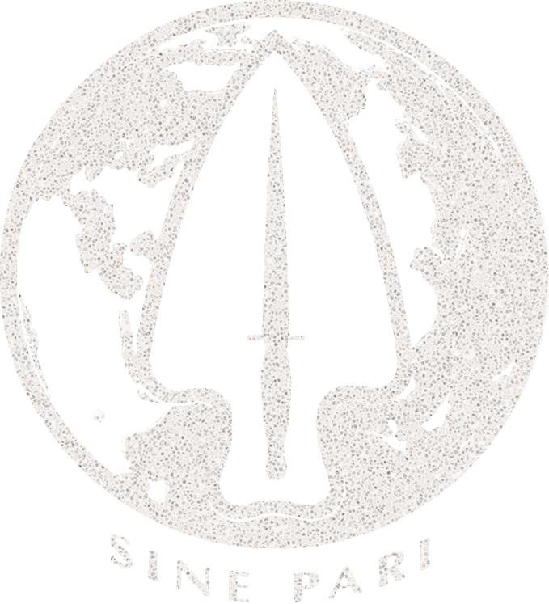
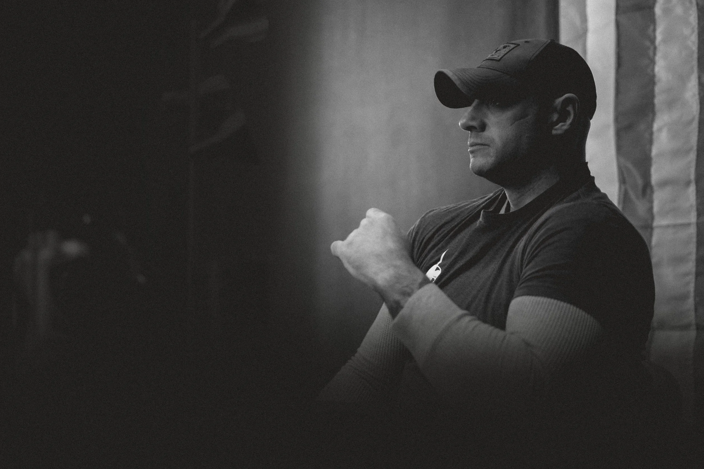

Precision Components is a leadership performance consultancy that develops leaders, teams, and organizations capable of sustained growth, adaptability, and high performance.
We work where strategy meets execution.
What we offer
Two services, one system.
Experiential catalysts that surface performance gaps and build alignment, and embedded advisory that changes how the organization operates day to day.
Who it's for
High-standard organizations.
Leadership teams and senior operators at pro sports franchises, Fortune-level enterprises, federal agencies, and universities — where execution failure is costly.
How we deliver
From inside the system.
A structured, applied framework — run by an internal team and a field network of specialists deployed by fit, so improvement holds.
Not sure which fits your organization?
Find your path → a 1-minute assessmentThe breakdown isn't where most people think it is.
Organizations invest heavily in strategy, training, and leadership development. And still — execution slips. Priorities compete. Alignment holds in the room but dissolves on the floor. Decisions that should move quickly don't.
This isn't a strategy failure. It's an operational performance problem. The gap between leadership's intent and frontline behavior is where results are won or lost — and it's rarely solved by more training, more communication, or a better framework.
It requires working inside the system itself. That's what Precision Components does.
Precision Components was built to work in exactly that environment.
Nick Lavery founded Precision Components after spending years operating in some of the most demanding, high-pressure environments that exist — as an active-duty Green Beret and Special Forces Chief Warrant Officer. The principles that govern how elite teams align, make decisions, and execute under pressure don't stay in those environments. They apply directly to how organizations perform.
Today, Precision Components works with leadership teams and senior operators across industries to address the breakdowns that standard advisory, training, or development programs leave unresolved. Nick and the team bring a structured, applied approach — not inspiration alone, but the operational framework to make improvement hold.
"Selecting Precision Components to provide mentorship, perspective, and insight was one of the best decisions I have made. He provided not just the example of leadership and determination, but the path and tools to replicate his processes and overcome our internal friction points."
PJ Langmaid · Chief · Black Forest Fire & RescueTwo ways in. One system.
Precision Components operates through a single integrated model — not a menu of standalone services. Organizations typically enter through one of two paths, depending on where they are and what they need most. Both paths connect. Many clients move between them over time.
Experiential Services
Create momentum and surface what's real.
High-impact experiences that surface performance gaps, create alignment, and generate the shared language needed for change to take hold. These aren't events — they're catalysts. They often open the door to deeper work.
Strategic Advisory Services
Change how the organization operates.
Embedded advisory and implementation work focused on how the organization operates day to day — how decisions are made, how priorities are communicated, and where execution is breaking down between intent and outcome.
Trusted by organizations that hold themselves to a high standard.
From professional sports franchises and Fortune-level enterprises to federal law enforcement and university leadership programs — Precision Components works with organizations where performance expectations are high and the cost of execution failure is real.





Kansas City Chiefs · Boston Celtics · Seattle Seahawks · Detroit Lions · NFL · FBI · Milwaukee Tool · Northwestern Mutual · US Special Operations Command · University of Chicago · Virginia Tech · UW Madison

Nick Lavery · Founder05 — The founder
The work is grounded in something real.
Nick Lavery is an active-duty Special Forces Chief Warrant Officer and the first above-the-knee amputee in military history to return to combat on a Special Forces team. He is the bestselling author of Objective Secure and has spent years translating the performance systems of elite military operations into frameworks that work inside complex organizations.
The experience behind Precision Components isn't borrowed from a framework. It was earned in environments where performance is non-negotiable and execution failures have real consequences.